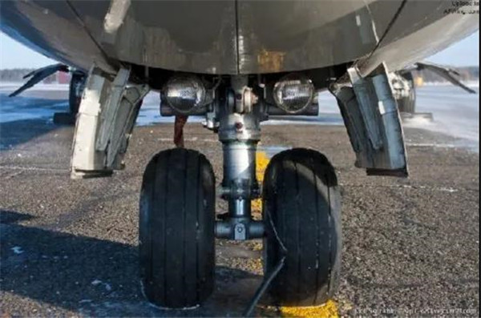

|
|
飞机结构
|
|
大多数飞机由5个主要部分组成：机翼、机身、发动机、操纵系统、起落装置。
机翼:

机翼的主要功用是为飞机提供升力，以支持飞机在空中飞行，也起一定的稳定和操纵作用。在机翼上一般安装有副翼和襟翼。操纵副翼可使飞机滚转；放下襟翼能使机翼升力系数增大。另外，机翼上还可安装发动机、起落架和油箱等。机翼有各种形状，数目也有不同。在航空技术不发达的早期为了提供更大的升力，飞机以双翼机甚至多翼机为主，但现代飞机一般是单翼机。
尾翼：
也是机翼，但主要是用来平衡飞行姿态、对飞机进行操纵，比如起飞、降落、在空中转弯。包括水平尾翼（平尾）和垂直尾翼（垂尾）。水平尾翼由固定的水平安定面和可转动的升降舵组成（某些型号的民用机和军用机整个平尾都是可动的控制面，没有专门的升降舵）。垂直尾翼则包括固定的垂直安定面和可动的方向舵。
机身：
机身的主要功用是装载乘员、旅客、武器、货物和各种设备；还可将飞机的其他部件如尾翼、机翼及发动机等连接成一个整体。如果将机身和机翼连接为一个整体，这种飞机叫飞翼。
发动机：

有的叫引擎，用来产生拉力或推力，使飞机前进。其次还可以为飞机上的用电设备提供电力，为空调设备等用气设备提供气源。发动机好比人的心脏，现代飞机的动力装置主要包括涡轮发动机和活塞发动机两种。应用较广泛的动力装置有四种：航空活塞式发动机加螺旋桨推进器；涡轮喷射发动机；涡轮螺旋桨发动机；涡轮风扇发动机。随着航空技术的发展，火箭发动机、冲压发动机等，也逐渐被采用。
起落装置：

起落装置又称起落架，是用来支撑飞机并使它能在地面和其他水平面起落和停放。陆上飞机的起落装置，一般由减震支柱和机轮组成，此外还有专供水上飞机起降的带有浮筒装置的起落架和雪地起飞用的滑橇式起落架。它是用于起飞与着陆滑跑、地面滑行和停放时支撑飞机。
|
|
| |